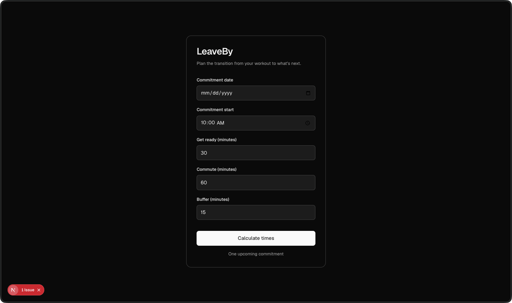
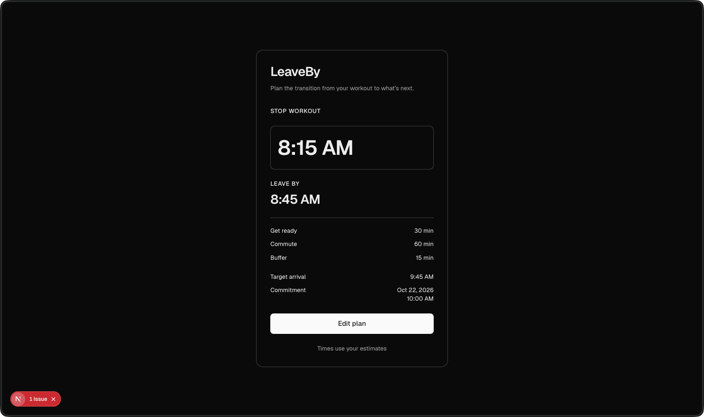

LeaveBy.
Make room for the workout.
Know when it’s time to go.
A few inputs.
A clear plan.


Development screenshots. The live app follows your device’s light or dark appearance.
The workout ends.
The day continues.
LeaveBy helps plan the transition from a workout to a fixed class or work start time.
It works backward from the next commitment, allowing time to get ready, commute, and arrive with a buffer. The result puts the stop-workout time first, followed by the leave-by time and a breakdown of the estimates.
For a 10:00 AM commitment with 30 minutes to get ready, a 60-minute commute, and a 15-minute buffer, the plan is to stop at 8:15 AM, leave at 8:45 AM, and arrive at 9:45 AM.
Plan.
Check.
Adjust.
The form asks for five inputs: commitment date, start time, preparation, commute, and buffer. Invalid or past commitments receive field-level feedback, and plans that cross midnight show the relevant dates.
Editing keeps the previous inputs available, so a different commute or preparation estimate can be recalculated without starting over.
The current app plans one upcoming commitment using your estimates and device time zone. It does not use live transit data or save plans between sessions.
What’s your
leave-by time?
Visit LeaveBy Choose your next commitment and calculate your plan.